Kibana Guide: Maps
|
This content was generated with the assistance of AI and should be verified against the official documentation before being relied on in production. |
Checked on 2026-11-11 against Kibana 9.5.x.
What you build
You add two geographic panels to the dashboard Bookshelf (guides). The first is a Lens region map that shades each country by the number of requests that came from it. The second is a Maps panel with two layers: a choropleth layer that joins the country shapes to the same counts, and a documents layer that draws one point for each request, with a tooltip.
The Bookshelf logs have no geography, so both panels use the Sample web logs data of Kibana; the guide shows the steps, and the same steps work for any data with a country code or a geo_point field.
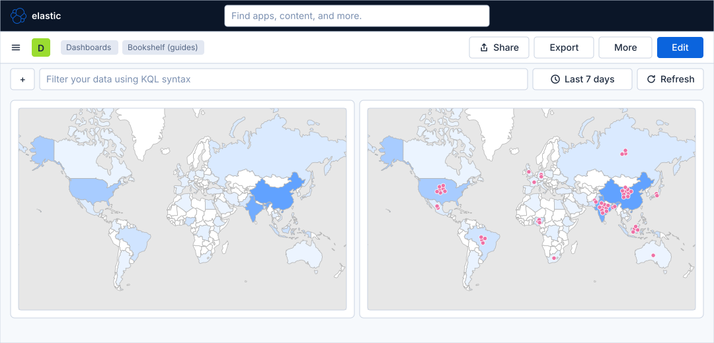
Before you start
-
Start the Kibana profile of the hands-on lab and wait about a minute:
cd lab docker compose --profile kibana up -d -
Open http://localhost:5601 and sign in as
elasticwith the passwordlab-elastic-password. When Kibana opens its full-screen welcome page, click Explore on my own. -
Do the guide Create a dashboard and the first Lens panel, which creates the dashboard Bookshelf (guides) and shows the maps of the Lens editor and of a dashboard in edit mode.
-
Install the Sample web logs data, as the guide First steps in Kibana shows: Home → Try sample data → Install data on the card Sample web logs. This creates the data view Kibana Sample Data Logs, whose fields
geo.src,geo.destandgeo.coordinateshold the country code of the source, the country code of the destination and the position of the request. The sample data covers about the last seven days, so the guide sets the time picker to Last 7 days. -
Maps and the region map need no licence beyond the basic one; the lab runs a trial licence anyway. The Elastic Maps Service, which provides the country shapes, is reached over the internet, so the lab host needs internet access for the country boundaries.
-
The guide was checked on Elasticsearch and Kibana 9.5.6. The figures are drawings of the Kibana 9.5 user interface, not screenshots, so small details can differ from your screen. The Maps editor, the chart type list and the drop zones of the region map are drawn from the Elastic documentation, so look for a control by its name when it is not where a figure shows it. The maps in the figures draw the real country outlines (Natural Earth, at a scale of 1:110 million) in the colours of the Elastic Maps Service basemap; the shading and the points stand for the sample data, not for your exact counts. A highlighted box with a number marks the control of the step with the same number.
Steps
The guide works in the Lens editor, in the Maps editor and on a dashboard in edit mode. The screen maps of the Lens editor and of the dashboard are in the first dashboard guide; come back to them when a control is not where a figure shows it.
Open a Lens editor on the dashboard
-
Open Dashboards in the primary navigation and click Bookshelf (guides).
-
Click Edit in the second bar.
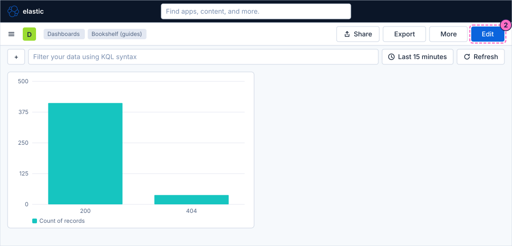
-
Click Add in the second bar. The Add to dashboard flyout opens.
-
In the flyout, click Visualization ("Build charts, metrics, and tables with a point-and-click editor.").
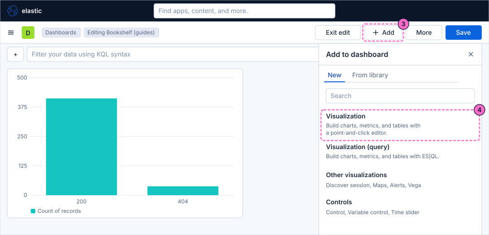
Build a region map in Lens
-
Lens opens. Open the Data view picker above the field list and choose Kibana Sample Data Logs.
-
Open the time picker, which shows Last 15 minutes, and choose Last 7 days, so that the editor covers the period of the sample data.
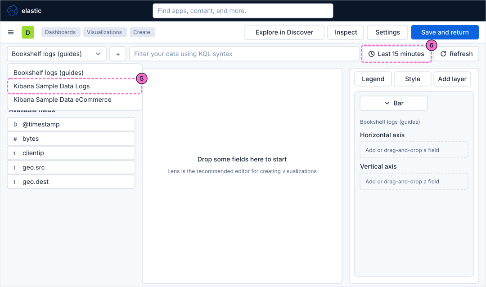
-
Open the chart type list with the button of the layer card, which shows Bar, and choose Region map.
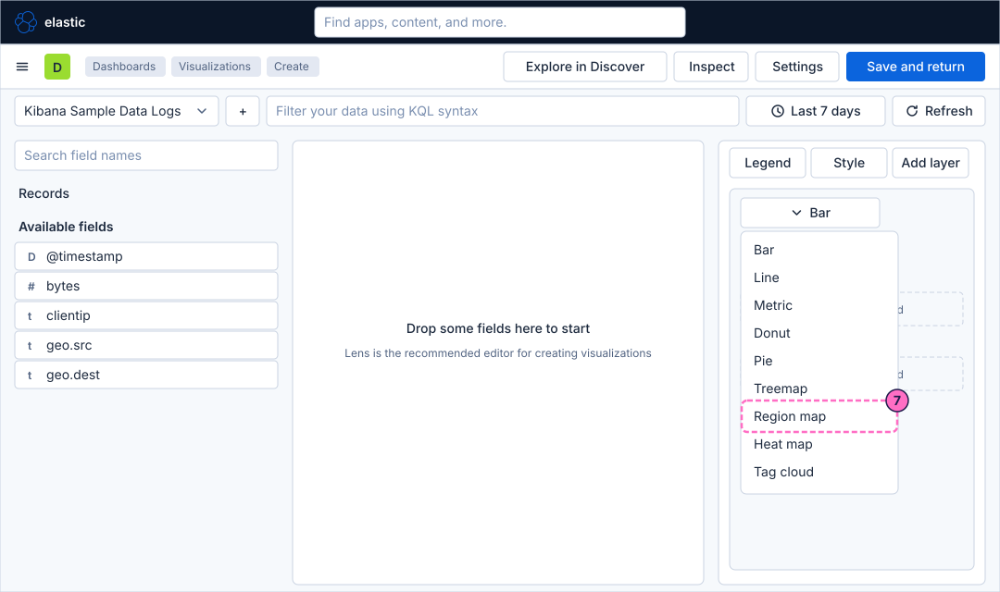
-
In Search field names, type
geo. Drag the fieldgeo.srconto the dashed button of the region dimension. If Lens asks which boundaries to use, choose the world countries and the country code that matches the values of the field. -
Drag the entry Records, above Available fields, onto the dashed Metric button. Lens shows it as Count of records and shades each country by its count.
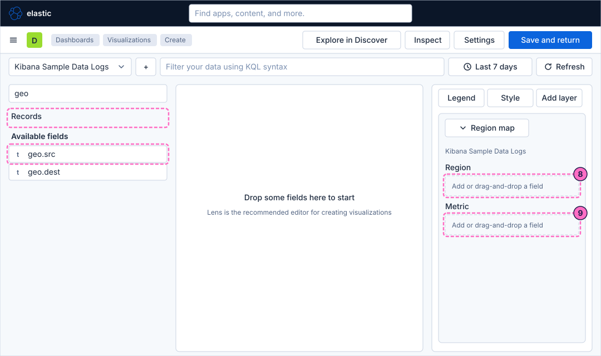
-
Click Save and return. The dashboard is back in edit mode with the region map as a new panel.
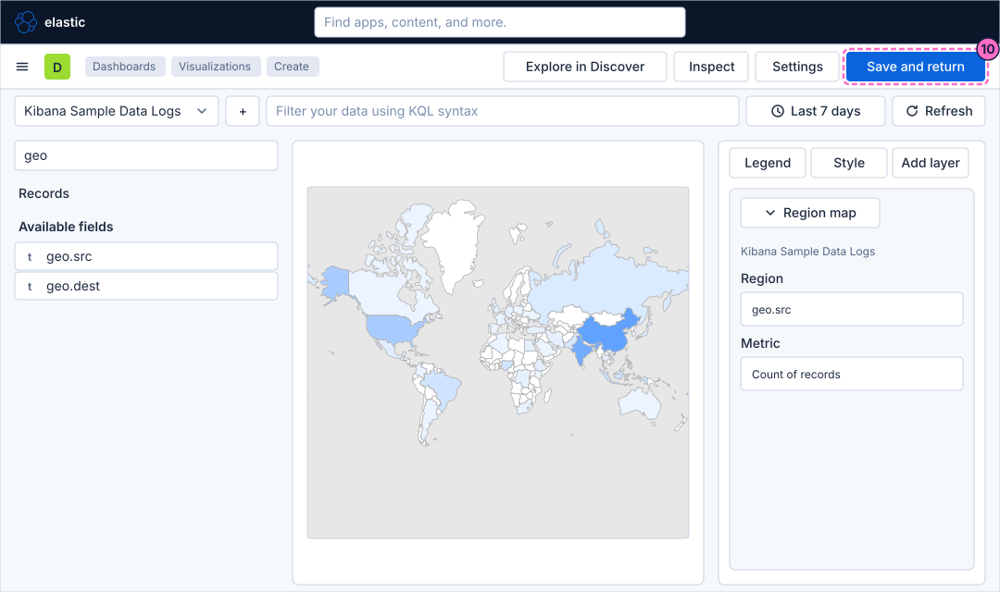
Build a Maps panel with two layers
-
Click Add and then, under Other visualizations, Maps. The Maps editor opens with a base map.
-
Click Add layer in the Layers panel.
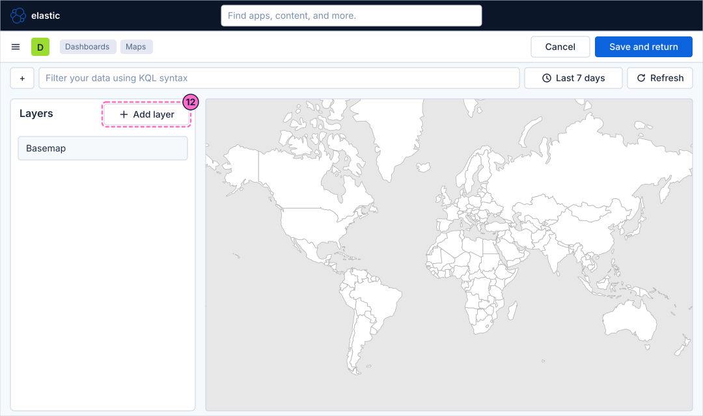
-
In the list of layer types, choose Choropleth. A choropleth shades areas, here countries, by a value.
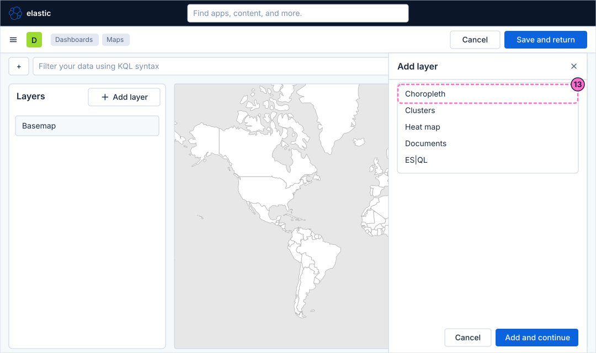
-
Choose the boundaries: the world countries of the Elastic Maps Service, and the field of the shapes that holds the two-letter country code (ISO 3166-1 alpha-2).
-
Choose the statistics source: the data view Kibana Sample Data Logs and the join field
geo.src. Kibana counts the records for each value ofgeo.srcand joins the count to the shape whose country code has the same value. -
Confirm the flyout with its primary button.
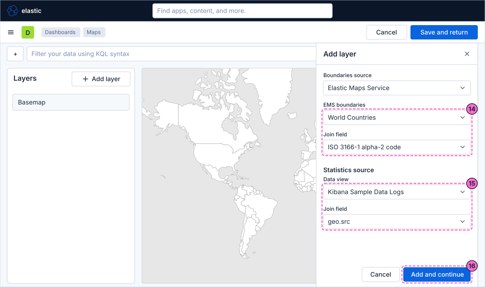
-
In the settings of the layer, open the Fill color and choose a colour ramp from light to dark, so that the darker a country is, the more requests came from it.
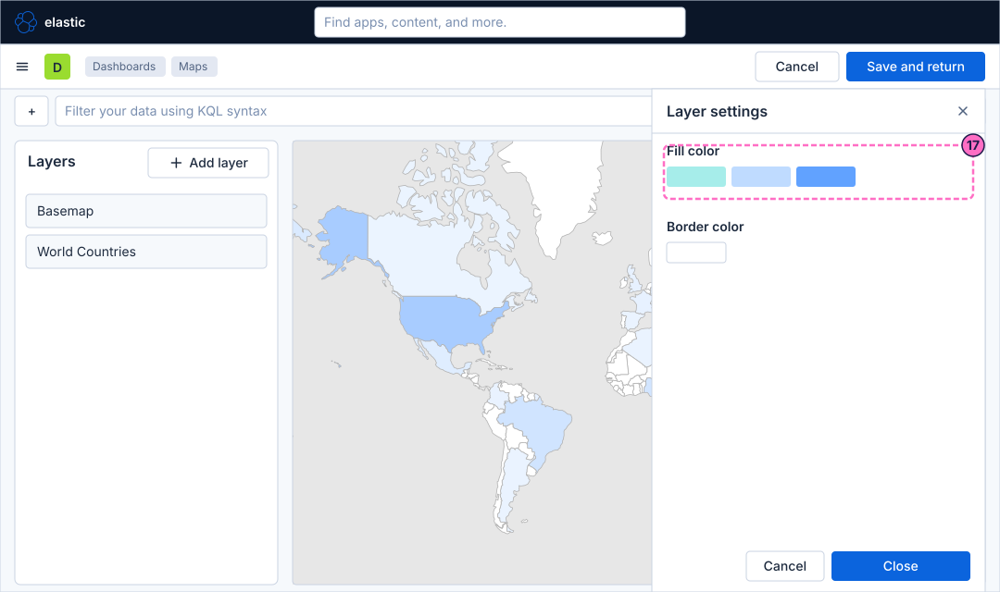
-
Click Add layer again and choose Documents. A documents layer draws one point for each record.
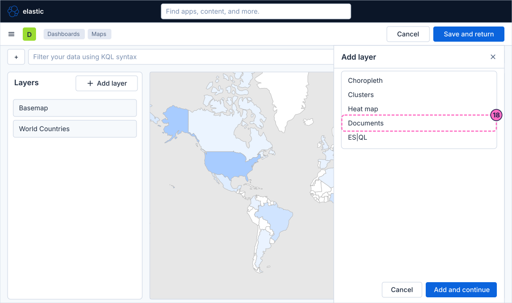
-
Choose the data view Kibana Sample Data Logs and the geospatial field
geo.coordinates. -
In the tooltip fields, add
clientip,responseandbytes. When a reader clicks a point, the tooltip lists these values of the record. -
Confirm the flyout with its primary button.
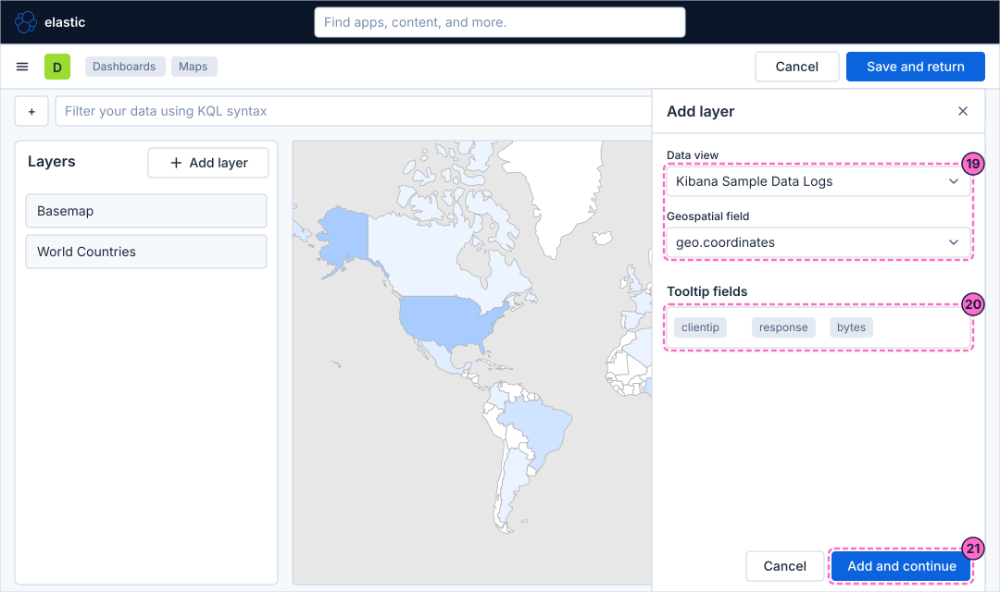
-
Both layers are on the map. Click Save and return.
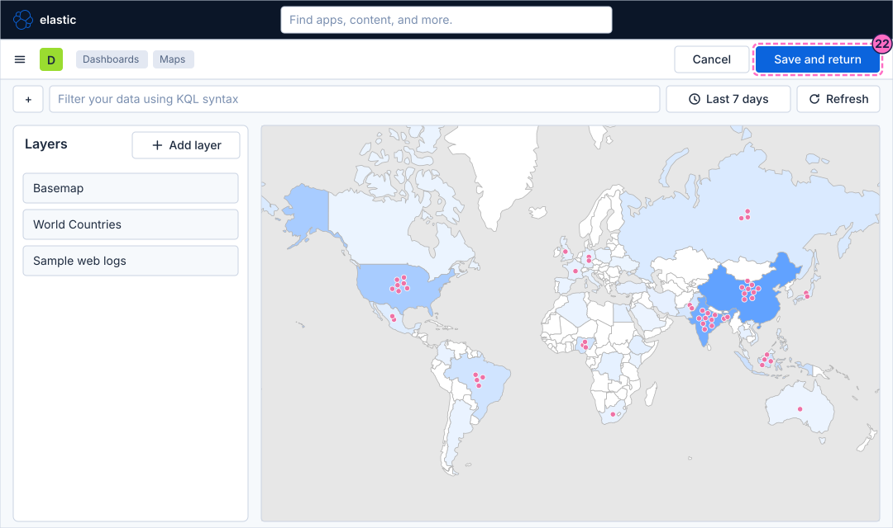
Check the result
Open Dashboards and then Bookshelf (guides) and set the time picker to Last 7 days, because the sample data is older than the Last 15 minutes that the dashboard opens with. The region map and the choropleth layer must shade the countries, and the documents layer must show points on the Maps panel. Click a point: its tooltip lists clientip, response and bytes.
The sample data is static, so the load generator has no effect on these panels.
Variations
-
On the Maps panel, add a heat map layer to see the density of the requests instead of single points.
-
Use
geo.destinstead ofgeo.srcas the join field to map where the requests were going to. -
In the query box of the Maps editor, type
response:404to see only the missing pages; the filter applies to the layers that read from Elasticsearch. -
For a real service, map the field that holds the client position, as the reference page shows; the Bookshelf logs of the lab have no such field.
What can go wrong
| Symptom | Cause | Fix |
|---|---|---|
The maps are empty |
The time picker covers Last 15 minutes, and the sample data is older. |
Set the time picker to Last 7 days. |
The countries have no shading |
The join does not match: the field of the shapes and |
Join the two-letter country code of the shapes to |
The country shapes do not load |
The lab host cannot reach the Elastic Maps Service. |
Check the internet access of the host, or use shapes that you uploaded. |
The documents layer shows no points |
The geospatial field is wrong, or the data view has no |
Choose |
The data view Kibana Sample Data Logs is not in the picker |
The sample web logs are not installed. |
Install them from Home → Try sample data, then reopen the editor. |
Clean up
Keep the dashboard: the following guides extend it. To remove the sample data, open Home → Try sample data and click Remove on the card Sample web logs. To remove everything the lab stores, stop the
profile with docker compose --profile kibana down -v, which also deletes the volumes and therefore the dashboard.
Where to go next
-
Previous guide: ES|QL panels and variable controls.
-
Next guide: Arrange and connect a dashboard, which lays out the panels and links them with drilldowns.
-
Reference: Maps, Vega & Other Panels covers the Maps app, Vega and the other panels, and Lens lists the chart types.
-
The Grafana counterpart is Grafana Guide: Geomap.